The Game
How to Play
What is DuckQuest?
DuckQuest is a screen-free, interactive board game designed to teach children how to think algorithmically. Players guide a duck across a physical board made of buttons and LEDs, solving logic puzzles based on pathfinding. Designed for use at home or in classrooms, DuckQuest turns abstract STEM concepts into a fun, hands-on experience.
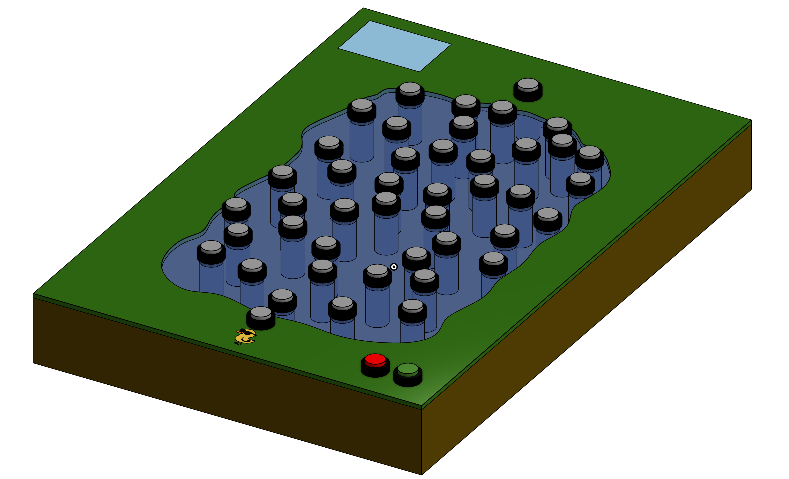
Game Objective
The goal of the game is to help the duck reach its destination using the most efficient path possible. Each level is a new graph, with the start and end points automatically selected by the game. The challenge: use logic and observation to find the path with the lowest total cost, avoiding inefficient or dangerous routes (indicated by red or orange LEDs).
The game board consists of:
- Physical buttons (nodes of a graph)
- Colored LEDs (edges connecting the buttons)
- A Raspberry Pi that controls everything behind the scenes. (See the how-it-works section for more details)
When powered on, the system highlights the starting nodes in green, sets the difficulty level (via pre-programmed configurations) and lights up all available paths with their associated weights shown through LED colors.
There is no phone, no screen (in the hardware mode not with only the UI), just the board and your mind.
Rules
The game begins when the player presses the designated starting node. To build a path, the player selects one button after another, effectively tracing a route across the graph. Each valid connection is confirmed by a cyan LED, which lights up between the two selected buttons, indicating that a segment of the path has been selected.
To be considered valid, the path must meet the following conditions:
| Valid | Invalid |
|---|---|

Each node is directly connected to the previous one |
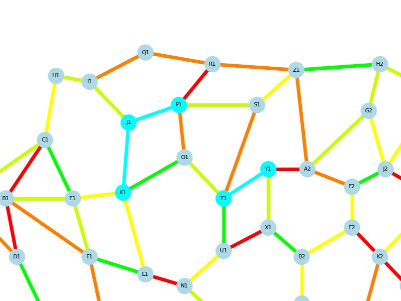 Path skips or jumps nodes |
|
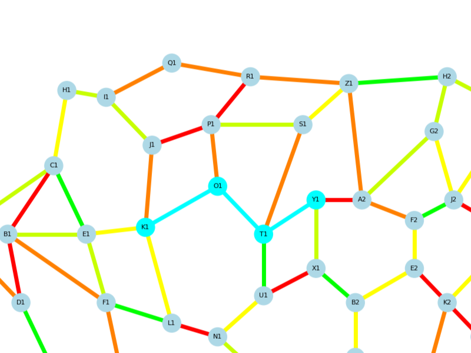 Path has the lowest total cost |
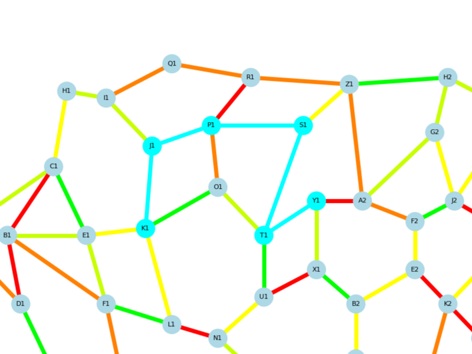 Path includes higher cost edges |
|
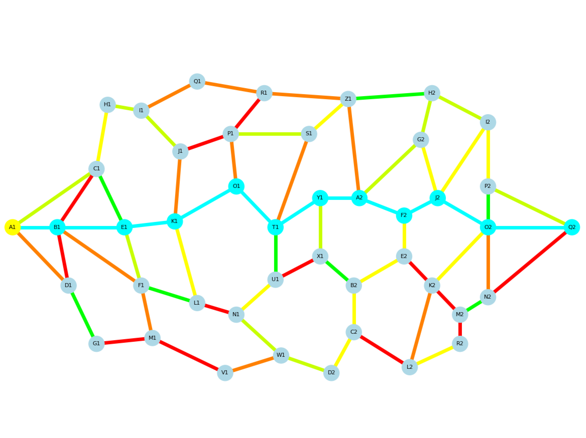 Path starts and ends at predefined nodes |
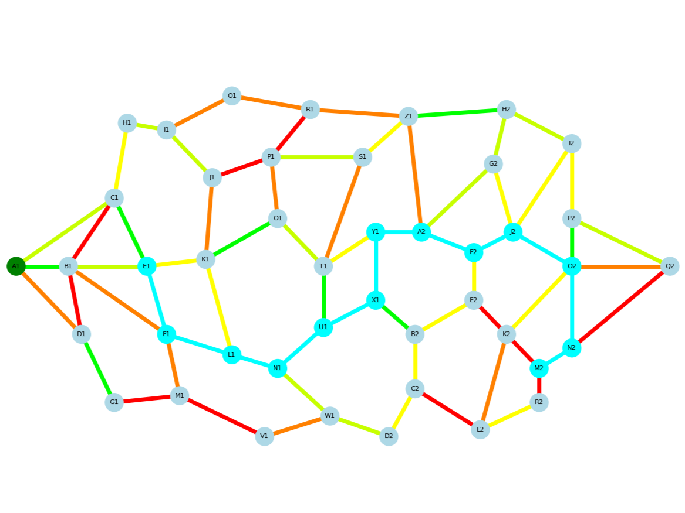 Wrong start or end node selected |
When the player believes they have reached the destination using the best possible route, they press the “Check your path” button to validate their selection.
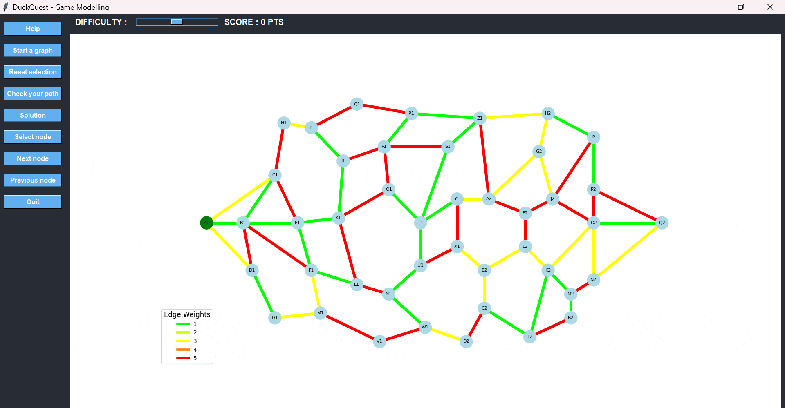
Additional rules and controls include:
- A node cannot be selected more than once in a single path.
- Invalid selections are not recorded.
-
If a mistake is made:
- Use Undo to remove the last selected node.
- Use Reset selection to clear the entire path and start over.
- A Help button is always available for assistance during the game.
Scoring & Feedback
The game compares the player’s solution with the optimal path (calculated using Dijkstra’s algorithm). The final score is given as a percentage of optimality. Visual and auditory feedback helps reinforce learning. The goal isn’t just to win, but to improve decision-making and reasoning.
Replayability
Each time the game starts, a new set of weights is randomly generated across the same fixed graph. This ensures that even though the board layout never changes, the optimal path always does. Children can replay the game countless times and still face new challenges with every round.
To keep the experience engaging over time, DuckQuest introduces a difficulty slider ranging from level 1 to 11. Each level adds new possible weights to the edges, making it harder to find the most efficient path.
At level 1, only one weight is used across the board—making the puzzle very predictable. But as the level increases, more weights are introduced (including high-cost ones), forcing players to think more critically and analyze more complex trade-offs.
This dynamic system increases the game’s longevity and learning depth, adapting to the player's skill progression.
Guided Example
Let’s walk through a complete example of how a player might guide the duck from the starting node A1 to the destination node Q2 using the shortest possible path.
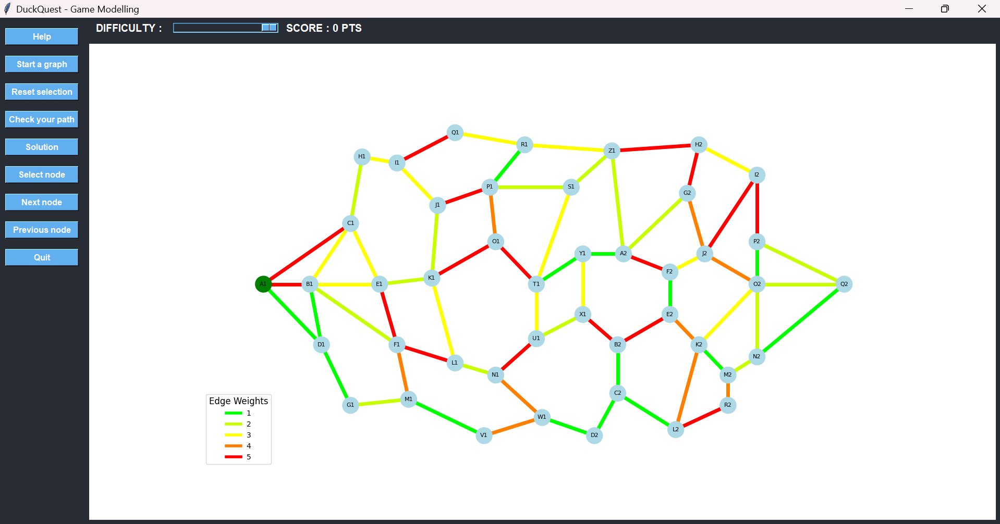
We begin at A1, which is the starting point. From there, we want to reach Q2, located on the opposite side of the graph. The key objective is to avoid high-cost edges, which are indicated by red and orange lines.
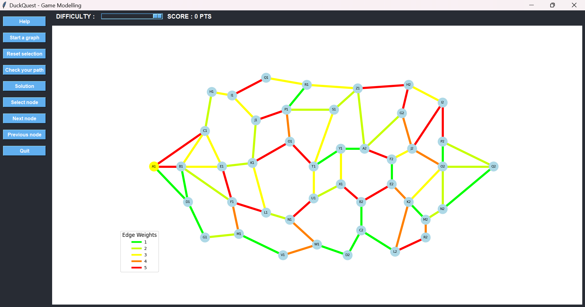
Instead of heading toward C1 or B1—both connected by red edges—we choose D1, which offers a low-cost connection. Once selected, the game visually confirms the move by changing the edge color from green to cyan, signaling that the path has been chosen.
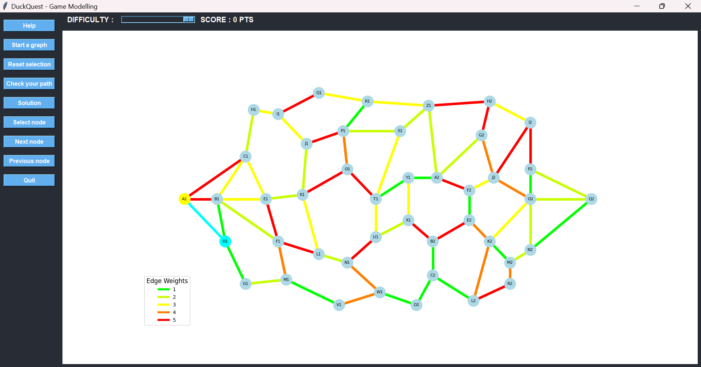
From D1, we consider B1 or G1. Both have low-cost paths, but B1 leads to several red paths later on. To avoid that, we choose G1 and then move forward to M1.
At M1, we face two options: go backward toward F1 via an orange edge or move forward toward V1 via a green edge. Clearly, V1 is the better choice.
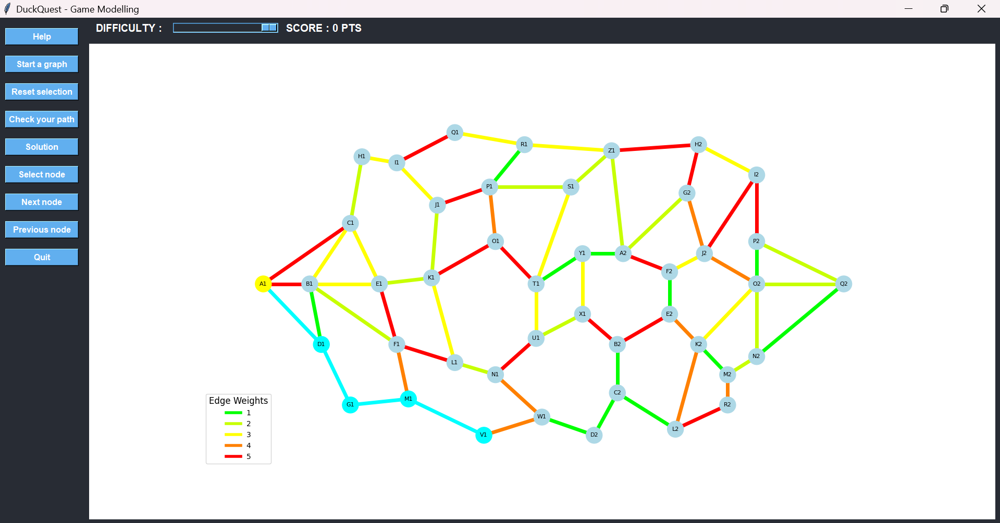
After selecting V1, we continue toward W1, even though the edge is orange—because it still offers a better strategic position. From W1, we again have a decision: step back to N1 through another orange path or go forward to D2 using a green one. We choose D2.
From there, we proceed to C2, where we’re offered two paths: up to B2 or across to L2. The first path leads to two red edges shortly after, so we go with L2, which only has one red path ahead.
From L2, we move upward to K2 using an orange edge—less ideal, but still better than the red alternative.
Then we must choose the final route to the destination:
- Option 1: K2 → O2 → Q2, with edge weights 3 (yellow) and 2 (bright green) → total cost: 5
- Option 2: K2 → M2 → N2 → Q2, with weights 1 (green), 2 (bright green), and 1 (green) → total cost: 4
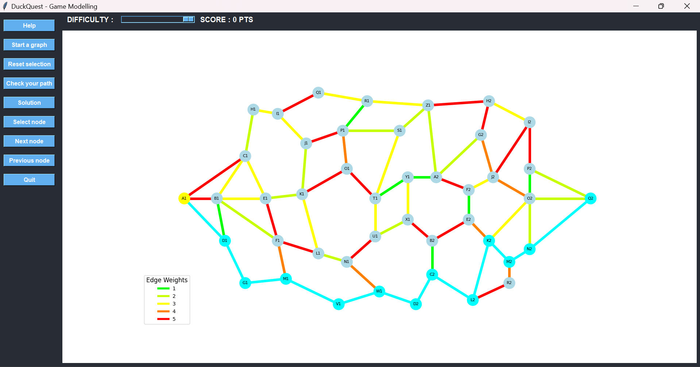
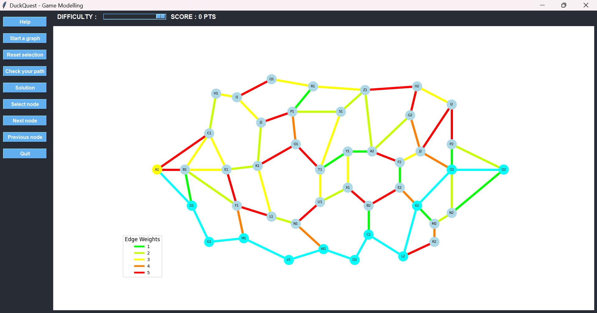
The second option is clearly better, even though it involves more nodes. This demonstrates that the shortest path in terms of cost is not always the one with the fewest steps.
Once we reach Q2, we press the Check your path button. The game calculates the total cost and compares it to the optimal path. Since our selection matches the best possible route, we receive a 100% score and earn maximum points.
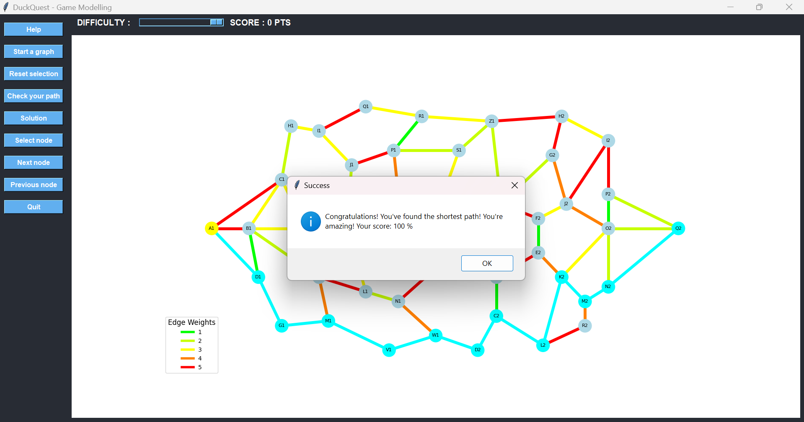
This walkthrough shows how logic, observation, and experimentation come together in every game of DuckQuest.